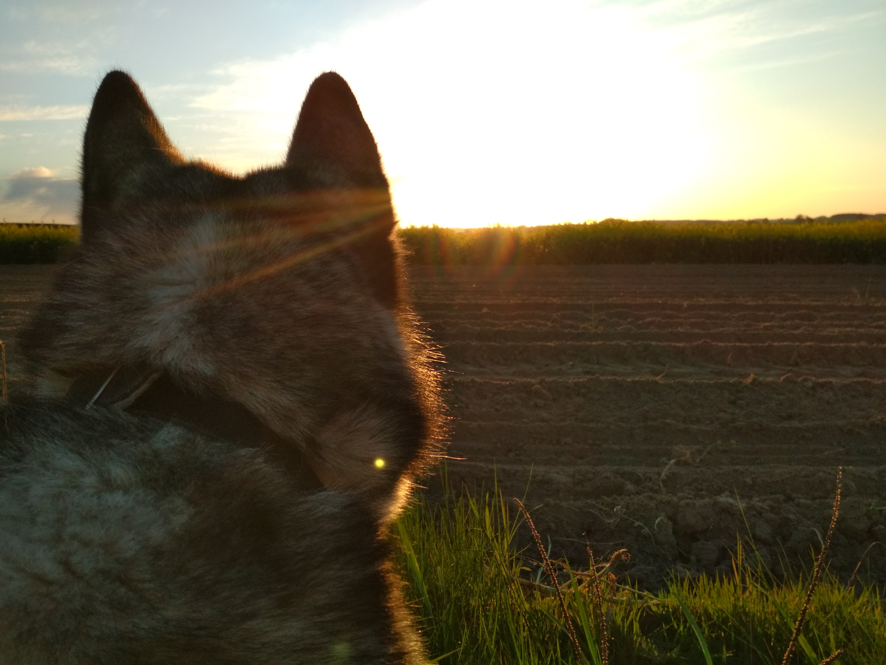
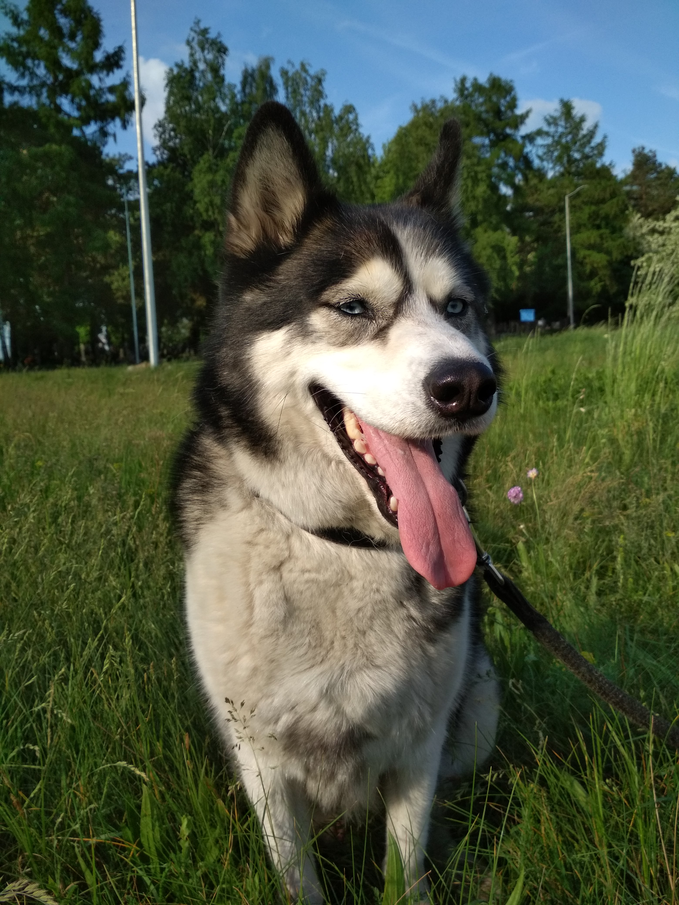
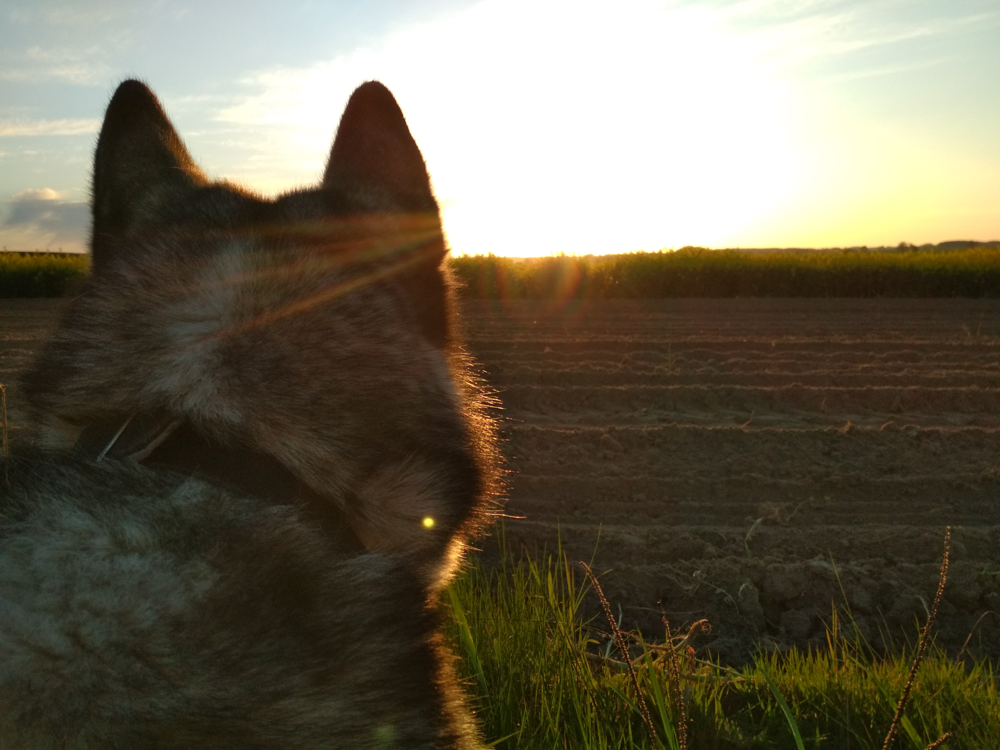
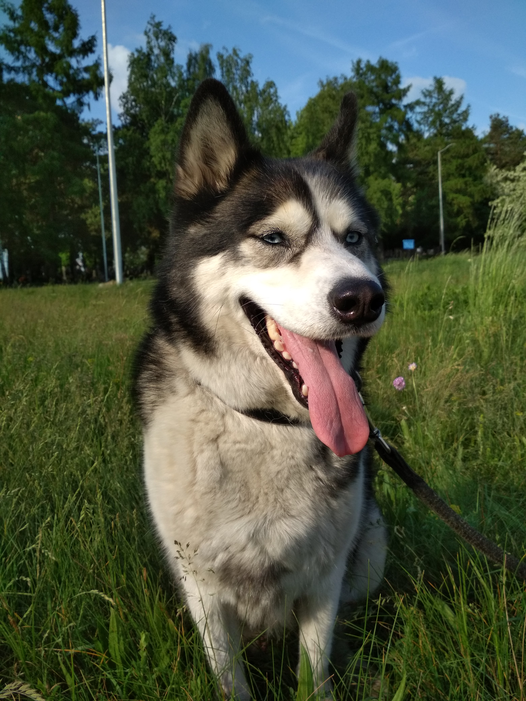

Husky syberyjski – jedna z ras psów, należąca do grupy szpiców i psów w typie pierwotnym, zaklasyfikowana
do sekcji północnych psów zaprzęgowych. Zgodnie z klasyfikacją amerykańską, należy do grupy psów pracujących.
 
do sekcji północnych psów zaprzęgowych. Zgodnie z klasyfikacją amerykańską, należy do grupy psów pracujących.
 
Od dawna Husky wykorzystywany jest jako pies zaprzęgowy. Obecnie jest to jeden z najbardziej rodzinnych psów ze względu na swój charakter.

-
Głowa: średniej wielkości, proporcjonalna do tułowia.
- Pysk jest średniej wielkości, zwęża się stopniowo w stronę wierzchołka nosa. Koniec kufy nie jest ani szpiczasty, ani kwadratowy. Wierzchołek nosa czarny u psów szarych, płowych i czarnych. Koloru wątrobianego u psów rudych (maści miedzianej). Brązowy lub cielisty u psów maści białej.
- Uszy są średniej wielkości trójkątne, wysoko osadzone i zbliżone do siebie, są grube i obficie porośnięte włosiem. Koniec ucha lekko zaokrąglony, stoi prosto do góry.
- Oczy są brązowe lub jasnoniebieskie, przy czym często jedno może mieć inny kolor niż drugie. Są w kształcie migdała i osadzone lekko skośnie. Oryginalną i często poszukiwaną cechą są niebieskie tęczówki.
- Szyja: średniej długości, dumnie noszona, gdy pies stoi, w kłusie szyja opuszcza się tak, że głowa noszona jest lekko do przodu, obficie owłosiona.
-
Tułów: silny zwarty, linia grzbietu prosta, kłąb wyraźny, lędźwie dobrze umięśnione, zad prosty, klatka piersiowa głęboka.
- Kończyny przednie: mocne i proste, równoległe względem siebie.
- Kończyny tylne: średnio kątowane, mocne, uda dobrze umięśnione.
- Ogon: w kształcie lisiej kity, dobrze owłosiony, osadzony powyżej linii grzbietu i noszony w kształcie sierpowatego łuku, gdy pies ma napiętą uwagę.
- Kościec: mocny, ale nie ciężki.
- Ruch: lekki, płynny, zwinny, swobodny, żywy i elegancki; ze względu na swój ciężar ciała i wielkość husky jest najszybszym z północnych ras psów zaprzęgowych.

Jest to pies bardzo spokojny. Nie umie szczekać, za to warczy gdy się bawi lub gdy chce odstraszyć wroga.
Husky bardzo kocha się bawić z dziećmi, uwielbia długie spacery po lesie.
Jest to uparty pies, więc bardzo ciężko go wytresować. Najłatwiej jest zachęcić go do nauki poprzez smakołyki, lecz nawet wtedy potrafi odmówić wykonania komendy.
Bardzo szybko przywiącuje się do właściciela.
Rasa ta bardzo kocha przygody, dlatego czasami ucieka, lecz zawsze tak, żeby widział właściciela. Gdy nie widzi właściciela, zaczyna go szykać.

Husky bardzo kocha się bawić z dziećmi, uwielbia długie spacery po lesie.
Jest to uparty pies, więc bardzo ciężko go wytresować. Najłatwiej jest zachęcić go do nauki poprzez smakołyki, lecz nawet wtedy potrafi odmówić wykonania komendy.
Bardzo szybko przywiącuje się do właściciela.
Rasa ta bardzo kocha przygody, dlatego czasami ucieka, lecz zawsze tak, żeby widział właściciela. Gdy nie widzi właściciela, zaczyna go szykać.
- Husky potrafi wyrażać emocje mimiką twarzy
- Potrafi się zżyć z właścicielem do tego stopnia, że po jego śmierci załamuje się psychicznie, lub umiera na zawał serca
- Pies o czarnym podniebieniu jest agresywny.
- Gdy pies ma ciepły nos, to znaczy, że jest chory. Jedynym sposobem na sprawdzenie, czy pies ma temperaturę jest zmierzenie jej termometrem. Nos ociepla się np. podczas drzemki.
- Dopiero pies w wieku około roku nadaje się na szkolenie. Pies powinien być szkolony od początku. Powoli i systematycznie.
- Karmienie psa mięsem powoduje, że rozbudzają się w nim krwiożercze instynkty.


- Potrafi się zżyć z właścicielem do tego stopnia, że po jego śmierci załamuje się psychicznie, lub umiera na zawał serca
- Pies o czarnym podniebieniu jest agresywny.
- Gdy pies ma ciepły nos, to znaczy, że jest chory. Jedynym sposobem na sprawdzenie, czy pies ma temperaturę jest zmierzenie jej termometrem. Nos ociepla się np. podczas drzemki.
- Dopiero pies w wieku około roku nadaje się na szkolenie. Pies powinien być szkolony od początku. Powoli i systematycznie.
- Karmienie psa mięsem powoduje, że rozbudzają się w nim krwiożercze instynkty.